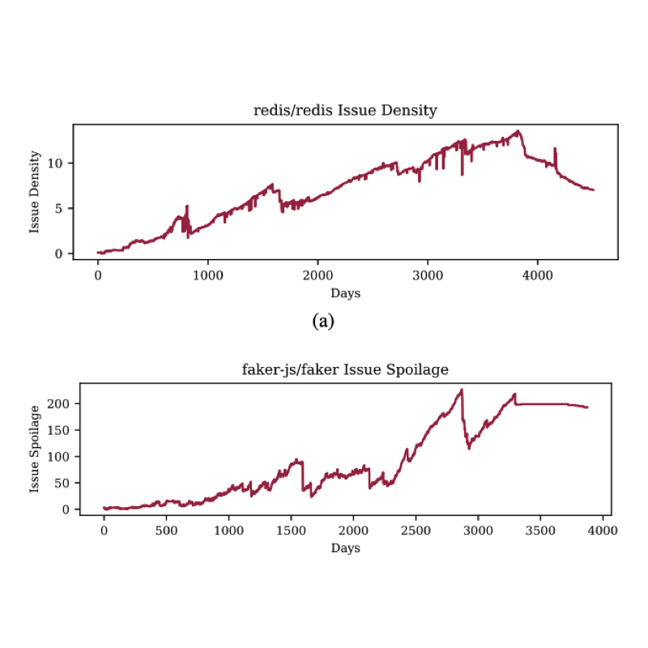

<tr onmouseout="None_stop()" onmouseover="None_start()">
<td class="demo">
<div class="one">
<div class="two" id="None">
</div>

</div>
<script type="text/javascript">
function None_start() { document.getElementById("None_before").style.opacity = "1"; }
function None_stop() { document.getElementById("None_before").style.opacity = "0"; }
None_stop()
</script>
</div>
<td style="padding:20px;width:75%;vertical-align:middle">
<span class="title">An Empirical Study of Artifacts and Security Risks in the Pretrained Model Supply Chain</span>
<br>
Wenxin Jiang
<a href="None"> Nicholas Synovic </a>
<a href="None"> Rohan Sethi </a>
<a href="None"> Aryan Indarapu </a>
<a href="None"> Matt Hyatt </a>
<a href="None"> Taylor R. Schorlemmer </a>
<a href="None"> George K.  Thiruvathukal </a>
<a href="None"> James C. Davis </a>
<br>
<em>ACM SCORED</em>, 2022
<br>
<a href="None"> project page </a>
<a href="None"> arxiv </a>
<p> None </p>
</td>
</tr>
<tr onmouseout="prime_stop()" onmouseover="prime_start()">
<td class="demo">
<div class="one">
<div class="two" id="prime">
</div>

</div>
<script type="text/javascript">
function prime_start() { document.getElementById("prime_before").style.opacity = "1"; }
function prime_stop() { document.getElementById("prime_before").style.opacity = "0"; }
prime_stop()
</script>
</div>
<td style="padding:20px;width:75%;vertical-align:middle">
<span class="title">Snapshot Metrics Are Not Enough: Analyzing Software Repositories with Longitudinal Metrics</span>
<br>
<a href="None"> Nicholas Synovic </a>
<a href="None"> Matt Hyatt </a>
<a href="None"> Rohan Sethi </a>
<a href="None"> Sohini Thota </a>
<a href="None"> Shilpika </a>
<a href="None"> Allan J. Miller </a>
Wenxin Jiang
<a href="None"> Emmanuel S. Amobi </a>
<a href="None"> Austin Pinderski </a>
<a href="None"> Konstantin Läufer </a>
<a href="None"> Nicholas J. Hayward </a>
<a href="None"> Neil Klingensmith </a>
<a href="None"> James C. Davis </a>
<a href="None"> George K. Thiruvathukal </a>
<br>
<em>ASE Tools Demo</em>, 2022
<br>
<a href="None"> project page </a>
arxiv
<p> None </p>
</td>
</tr>